공조냉동기계산업기사 (2018-04-28 기출문제)
1과목: 공기조화
1. 난방부하의 변동에 따른 온도조절이 쉽고, 열용량이 커서 실내의 쾌감도가 좋으며, 공급온도를 변화시킬 수 있고, 방열기 밸브로 방열량을 조절할 수 있는 난방방식은?
- 온수난방방식
- 증기난방방식
- 온풍난방방식
- 냉매난방방식
(정답률: 83%)

2. 다음 중 개방식 팽창탱크에 반드시 필요한 요소가 아닌 것은?
- 압력계
- 수면계
- 안전관
- 팽창관
(정답률: 59%)
3. 단효율 흡수식 냉동기의 능력이 감소하는 원인이 아닌 것은?
- 냉수 출구온도가 낮아질수록 심하게 감소한다.
- 압축비가 작을수록 감소한다.
- 사용 증기압이 낮아질수록 감소한다.
- 냉각수 입구온도가 높아질수록 감소한다.
(정답률: 57%)
4. 다음 중 습공기선도 상에 표시되지 않는 것은?
- 비체적
- 비열
- 노점온도
- 엔탈피
(정답률: 75%)
5. 공기의 가습방법으로 틀린 것은?
- 에어워셔에 의한 방법
- 얼음을 분무하는 방법
- 증기를 분무하는 방법
- 가습팬에 의한 방법
(정답률: 82%)
6. 냉동기를 구동시키기 위하여 여름에도 보일러를 가동하는 열원방식은?
- 터보냉동기 방식
- 흡수식냉동기 방식
- 빙축열 방식
- 열병합 발전 방식
(정답률: 71%)
7. 일정한 건구온도에서 습공기의 성질 변화에 대한 설명으로 틀린 것은?
- 비체적은 절대습도가 높아질수록 증가한다.
- 절대습도가 높아질수록 노점온도는 높아진다.
- 상대습도가 높아지면 절대습도는 높아진다.
- 상대습도가 높아지면 엔탈피는 감소한다.
(정답률: 62%)
8. 복사난방에 관한 설명으로 옳은 것은?
- 고온식 복사난방은 강판제 패널 표면의 온도를 100℃ 이상으로 유지하는 방법이다.
- 파이프 코일의 매설 깊이는 균등한 온도분포를 위해 코일 외경과 동일하게 한다.
- 온수의 공급 및 환수 온도차는 가열면의 균일한 온도분포를 위해 10℃ 이상으로 한다.
- 방이 개방상태에서도 난방효과가 있으나 동일 방열량에 대해 손실량이 비교적 크다.
(정답률: 75%)
9. A상태에서 B상태로 가는 냉방과정에서 현열비는?
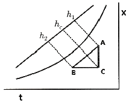
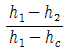
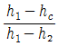
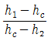
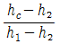
(정답률: 69%)
10. 다음 중 방열기의 종류로 가장 거리가 먼 것은?
- 주철제 방열기
- 강판제 방열기
- 컨벡터
- 응축기
(정답률: 71%)
11. 지하 주차장 환기설비에서 천정부에 설치되어 있는 고속노즐로부터 취출되는 공기의 유인효과를 이용하여 오염공기를 국부적으로 희석시키는 방식은?
- 제트팬 방식
- 고속덕트 방식
- 무덕트환기 방식
- 고속노즐 방식
(정답률: 72%)
12. 다음은 난방부하에 대한 설명이다. ( )에 적당한 용어로서 옳은 것은?
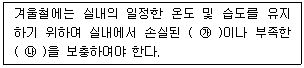
- ㉮ 수분량, ㉯ 공기량
- ㉮ 열량, ㉯ 공기량
- ㉮ 공기량, ㉯ 열량
- ㉮ 열량, ㉯ 수분량
(정답률: 85%)
13. 인접실, 복도, 상층, 하층이 공조되지 않는 일반 사무실의 남측 내벽(A)의 손실 열량(kcal/h)은? (단, 설계조건은 실내온도 20℃, 실외온도 0℃, 내벽 열통과율(k)은 1.6kcal/m2ㆍhㆍ℃로 한다.)
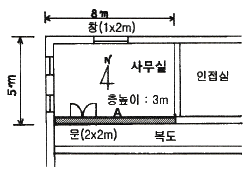
- 320
- 872
- 1193
- 2937
(정답률: 44%)
14. 고성능의 필터를 측정하는 방법으로 일정한 크기(0.3μm)의 시험입자를 사용하여 먼지의 수를 계측하는 시험법은?
- 중량법
- TETD/TA법
- 비색법
- 계수(DOP)법
(정답률: 86%)
15. 다음 중 천장이나 벽면에 설치하고 기류방향을 자유롭게 조정할 수 있는 취출구는?
- 펑커루버형 취출구
- 베인형 취출구
- 팬형 취출구
- 아네모스탯형 취출구
(정답률: 75%)
16. 개방식 냉각탑의 설계 시 유의사항으로 옳은 것은?
- 압축식 내동기 1 RT 당 냉각열량은 3.26 kW로 한다.
- 쿨링 어프로치는 일반적으로 10℃로 한다.
- 압축식 냉동기 1 RT 당 수량은 외기습구온도가 27℃일 때 8L/min 정도로 한다.
- 흡수식냉동기를 사용할 때 열량은 일반적으로 압축식 냉동기의 약 1.7배 ~ 2.0배 정도로 한다.
(정답률: 73%)
17. 어떤 실내의 취득열량을 구했더니 감열이 40kW, 잠열이 10 kW였다. 실내를 건구온도 25℃, 상대습도 50%로 유지하기 위해 취출온도차 10℃로 송풍하고자 한다. 이 때 현열비(SHF)는?
- 0.6
- 0.7
- 0.8
- 0.9
(정답률: 66%)
18. 수관보일러의 종류가 아닌 것은?
- 노통연관식 보일러
- 관류보일러
- 자연순환식 보일러
- 강제순환식 보일러
(정답률: 73%)
19. 온수난방 배관 시 유의사항으로 틀린 것은?
- 배관의 최저점에는 필요에 따라 배관 중의 물을 완전히 배수할 수 있도록 배수 밸브를 설치한다.
- 배관 내 발생하는 기포를 배출시킬 수 있는 장치를 한다.
- 팽창관 도중에는 밸브를 설치하지 않는다.
- 증기배관과는 달리 신축 이음을 설치하지 않는다.
(정답률: 82%)
20. 실내취득열량 중 현열이 35kW일 때, 실내온도를 26℃로 유지하기 위해 12.5℃의 공기를 송풍하고자 한다. 송풍량(m3/min)은? (단, 공기의 비열은 1.0kJ/kgㆍ℃, 공기의 밀도는 1.2kg/m3로 한다.)
- 129.6
- 154.3
- 308.6
- 617.2
(정답률: 37%)
2과목: 냉동공학
21. 다음 중 공비혼합냉매는 무엇인가?
- R401A
- R501
- R717
- R600
(정답률: 70%)
22. 냉동장치의 냉동능력이 3RT이고, 이 때 압축기의 소요동력이 3.7kW이였다면 응축기에서 제거하여야 할 열량(kcal/h)은?
- 9860
- 13142
- 18250
- 25500
(정답률: 60%)
23. 다음 중 압축기의 보호를 위한 안전장치로 바르게 나열된 것은?
- 가용전, 고압스위치, 유압보호스위치
- 고압스위치, 안전밸브, 가용전
- 안전밸브, 안전두, 유압보호스위치
- 안전밸브, 가용전, 유압보호스위치
(정답률: 70%)
24. 다음 그림에서 냉동효과(kcal/kg)는 얼마인가?
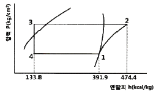
- 340.6
- 258.1
- 82.5
- 3.13
(정답률: 56%)
25. 암모니아 냉동장치에서 압축기의 토출압력이 높아지는 이유로 틀린 것은?
- 장치 내 냉매 충전량이 부족하다.
- 공기가 장치에 혼입되었다.
- 순환 냉각수 양이 부족하다.
- 토출 배관 중의 패쇄밸브가 지나치게 조여져 있다.
(정답률: 54%)
26. 냉동장치의 액분리기에 대한 설명으로 바르게 짝지어진 것은?
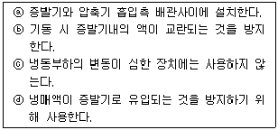
- ⓐ, ⓑ
- ⓒ, ⓓ
- ⓐ, ⓒ
- ⓑ, ⓒ
(정답률: 76%)
27. 냉동장치의 운전에 관한 유의사항으로 틀린 것은?
- 운전 휴지 기간에는 냉매를 회수하고, 저압측의 압력은 대기압보다 낮은 상태로 유지한다.
- 운전 정지 중에는 오일 리턴 밸브를 차단시킨다.
- 장시간 정지 후 시동 시에는 누설여부를 점검 후 기동시킨다.
- 압축기를 기동시키기 전에 냉각수 펌프를 기동시킨다.
(정답률: 69%)
28. 브라인 냉각장치에서 브라인의 부식방지 처리법이 아닌 것은?
- 공기와 접촉시키는 순환방식 채택
- 브라인의 PH를 7.5 ~ 8.2 정도로 유지
- CaCl2 방청제 첨가
- NaCl 방청제 첨가
(정답률: 75%)
29. 표준냉동사이클에 대한 설명으로 옳은 것은?
- 응축기에서 버리는 열량은 증발기에서 취하는 열량과 같다.
- 증기를 압축기에서 단열압축하면 압력과 온도가 높아진다.
- 팽창밸브에서 팽창하는 냉매는 압력이 감소함과 동시에 열을 방출한다.
- 증발기 내에서의 냉매증발온도는 그 압력에 대한 포화온도보다 낮다.
(정답률: 68%)
30. 밀폐계에서 10kg의 공기가 팽창 중 400kJ의 열을 받아서 150kJ의 내부에너지가 증가하였다. 이 과정에서 계가 한 일(kJ)은?
- 550
- 250
- 40
- 15
(정답률: 69%)
31. 증기압축식 냉동장치에서 응축기의 역할로 옳은 것은?
- 대기 중으로 열을 방출하여 고압의 기체를 액화시킨다.
- 저온, 저압의 냉매기체를 고온, 고압의 기체로 만든다.
- 대기로부터 열을 흡수하여 열 에너지를 저장한다.
- 고온, 고압의 냉매기체를 저온, 저압의 기체로 만든다.
(정답률: 60%)
32. 액분리기(Accumulator)에서 분리된 냉매의 처리방법이 아닌 것은?
- 가열시켜 액을 증발시킨 후 응축기로 순환시킨다.
- 증발기로 재순환시킨다.
- 가열시켜 액을 증발시킨 후 압축기로 순환시킨다.
- 고압측 수액기로 회수한다.
(정답률: 62%)
33. 4마력(PS)기관이 1분간에 하는 일의 열당량(kcal)은?
- 0.042
- 0.42
- 4.2
- 42.1
(정답률: 64%)
34. 2단 압축식 냉동장치에서 증발압력부터 중간압력까지 압력을 높이는 압축기를 무엇이라고 하는가?
- 부스터
- 에코노마이저
- 터보
- 루트
(정답률: 81%)
35. 엔트로피에 관한 설명으로 틀린 것은?
- 엔트로피는 자연현상의 비가역성 나타내는 척도가 된다.
- 엔트로피를 구할 때 적분경로는 반드시 가역변화여야 한다.
- 열기관이 가역사이클이면 엔트로피는 일정하다.
- 열기관이 비가역사이클이면 엔트로피는 감소한다.
(정답률: 70%)
36. R-22 냉매의 압력과 온도를 측정하였더니 압력이 15.8kg/cm2 abs, 온도가 30℃였다. 이 냉매의 상태는 어떤 상태인가? (단, R-22 냉매의 온도가 30℃일 때 포화압력은 12.25kg/cm2 abs 이다.)
- 포화상태
- 과열 상태인 증기
- 과냉 상태인 액체
- 응고상태인 고체
(정답률: 52%)
37. 프레온 냉매를 사용하는 수냉식 응축기의 순환수량이 20L/min이며, 냉각수 입ㆍ출구 온도차가 5.5℃였다면, 이 응축기의 방출열량(kcal/h)은?
- 110
- 6000
- 6600
- 700
(정답률: 68%)
38. 스크롤압축기의 특징에 대한 설명으로 틀린 것은?
- 부품수가 적고 고속회전이 가능하다.
- 소요토크의 영향으로 토출가스의 압력변도이 심하다.
- 진동 소음이 적다.
- 스크롤의 설계에 의해 압축비가 결정되는 특징이 있다.
(정답률: 47%)
39. 암모니아 냉동장치에서 팽창밸브 직전의 냉매액의 온도가 25℃이고, 압축기 흡입가스가 –15℃인 건조포화 증기이다. 냉동능력 15RT가 요구될 때 필요 냉매순환량(kg/h)은? (단, 냉매순환량 1kg당 냉동효과는 269kcal 이다.)
- 168
- 172
- 185
- 212
(정답률: 47%)
40. 냉동장치의 압력스위치에 대한 설명으로 틀린 것은?
- 고압스위치는 이상고압이 될 때 냉동장치를 정지시키는 안전장치이다.
- 저압스위치는 냉동장치의 저압측 압력이 지나치게 저하하였을 때 전기회로를 차단하는 안전장치이다.
- 고저압스위치는 고압스위치와 저압스위치를 조합하여 고압측이 일정압력 이상이 되거나 저압측이 일정압력보다 낮으면 압축기를 정지시키는 스위치이다.
- 유압스위치는 윤활유 압력이 어떤 원인으로 일정압력 이상으로 된 경우 압축기의 훼손을 방지하기 위하여 설치하는 보조장치이다.
(정답률: 63%)
3과목: 배관일반
41. 온수난방 배관 시공 시 유의사항에 관한 설명으로 틀린 것은?
- 배관은 1/250 이상의 일정기울기로 하고 최고부에 공기빼기 밸브를 부착한다.
- 고장 수리용으로 배관의 최저부에 배수밸브를 부착한다.
- 횡주배관 중에 사용하는 레듀서는 되도록 편심레듀서를 사용한다.
- 횡주관의 관말에는 관말 트랩을 부착한다.
(정답률: 59%)
42. 관의 보냉 시공의 주된 목적은?
- 물의 동결방지
- 방열방지
- 결로방지
- 인화방지
(정답률: 79%)
43. 다음은 횡형 셸 튜브 타입 응축기의 구조도이다. 열전달 효율을 고려하여 냉매 가스의 입구 측 배관은 어느 곳에 연결하여야 하는가?
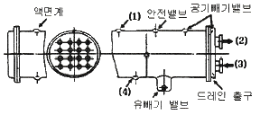
- (1)
- (2)
- (3)
- (4)
(정답률: 74%)
44. 플로트 트랩의 장점이 아닌 것은?
- 다량ㆍ소량의 응축수 모두 처리 가능하다.
- 넓은 범위의 압력에서 작동한다.
- 견고하고 증기해머에 강하다.
- 자동 에어벤트가 있어 공기배출 능력이 우수하다.
(정답률: 67%)
45. 증기난방과 비교하여 온수난방의 특징에 대한 설명으로 틀린 것은?
- 온수난방은 부하 변동에 대응한 온도 조절이 쉽다.
- 온수난방은 예열하는데 많은 시간이 걸리지만 잘 식지 않는다.
- 연료소비량이 적다.
- 온수난방의 설비비가 저가인 점이 있으나 취급이 어렵다.
(정답률: 74%)
46. 펌프 주변 배관 설치 시 유의사항으로 틀린 것은?
- 흡입관은 되도록 길게 하고 굴곡부분은 적게 한다.
- 펌프에 접속하는 배관의 하중이 직접펌프로 전달되지 않도록 한다.
- 배관의 하단부에는 드레인 밸브를 설치한다.
- 흡입측에는 스트레이너를 설치한다.
(정답률: 79%)
47. 저온배관용 탄소강관의 기호는?
- STBH
- STHA
- SPLT
- STLT
(정답률: 76%)
48. 증기난방 방식에서 응축수 환수방법에 따른 분류가 아닌 것은?
- 중력 환수식
- 진공 환수식
- 정압 환수식
- 기계 환수식
(정답률: 67%)
49. 급수관의 관 지름 결정 시 유의사항으로 틀린 것은?
- 관 길이가 길면 마찰손실도 커진다.
- 마찰손실은 유량, 유속과 관계가 있다.
- 가는 관을 여러 개 쓰는 것이 굵은 관을 쓰는 것보다 마찰손실이 적다.
- 마찰손실은 고저차가 크면 클수록 손실도 커진다.
(정답률: 81%)
50. 증기난방 설비 시공 시 수평주관으로부터 분기 입상시키는 경우 관의 신축을 고려하여 2개 이상의 엘보를 이용하여 설치하는 신축 이음은?
- 스위블 이음
- 슬리브 이음
- 벨로즈 이음
- 플렉시블 이음
(정답률: 74%)
51. 음용수 배관과 음용수 이외의 배관이 접속되어 서로 혼합을 일으켜 음용수가 오염될 가능성이 큰 배관접속 방법은?
- 하트포드 이음
- 리버스리턴 이음
- 크로스 이음
- 역류방지 이음
(정답률: 78%)
52. 급수관의 지름을 결정할 때 급수 본관인 경우 관내의 유속은 일반적으로 어느 정도로 하는 것이 가장 적절한가?
- 1~2m/s
- 3~6m/s
- 10~15m/s
- 20~30m/s
(정답률: 78%)
53. 암모니아 냉매 배관에 사용하기 가장 적합한 것은?
- 알루미늄 합금관
- 동관
- 아연관
- 강관
(정답률: 66%)
54. 다음 그림 기호가 나타내는 밸브는?
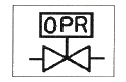
- 증발압력 조정밸브
- 유압 조정밸브
- 용량 조정밸브
- 흡입압력 조정밸브
(정답률: 80%)
55. 다음 중 중압 가스용 지중 매설관 배관재료로 가장 적합한 것은?
- 경질염화비닐관
- PE 피복강관
- 동합금관
- 이음매 없는 피복 황동관
(정답률: 67%)
56. 보온재의 구비 조건으로 틀린 것은?
- 열전도율이 클 것
- 불연성일 것
- 내식성 및 내열서이 있을 것
- 비중이 적고 흡습성이 적을 것
(정답률: 81%)
57. 동합금 납땜 관이음쇠와 강관의 이종관 접합시 1개의 동합금 납땜 관이음쇠로 90° 방향전환을 위한 부속의 접합부 기호 및 종류로 옳은 것은?
- C×F 90° 엘보
- C×M 90° 엘보
- F×F 90° 엘보
- C×M 어댑터
(정답률: 59%)
58. 냉동배관 재료로서 갖추어야 할 조건으로 틀린 것은?
- 저온에서 강도가 커야 한다.
- 내식성이 커야 한다.
- 관내 마찰저항이 커야 한다.
- 가공 및 시공성이 좋아야 한다.
(정답률: 81%)
59. 공장에서 제조 정제된 가스를 저장하여 가스 품질을 균일하게 유지하면서 제조량과 수요량을 조절하는 장치는?
- 정압기
- 가스홀더
- 가스미터
- 압송기
(정답률: 65%)
60. 흡수식 냉동기 주변배관에 관한 설명으로 틀린 것은?
- 증기조절밸브와 감압밸브장치는 가능한 냉동기 가까이에 설치한다.
- 공급 주관의 응축수가 냉동기 내에 유입되도록 한다.
- 증기관에는 신축이음 등을 설치하여 배관의 신축으로 발생하는 응력이 냉동기에 전달되지 않도록 한다.
- 증기 드레인 제어방식은 진공펌프로 냉동기내의 드레인을 직접 압출하도록 한다.
(정답률: 60%)
4과목: 전기제어공학
61. 되먹임 제어의 종류에 속하지 않는 것은?
- 순서제어
- 정치제어
- 추치제어
- 프로그램제어
(정답률: 63%)
62. 직류전동기의 속도제어 방법 중 속도제어의 범위가 가장 광범위하며, 운전 효율이 양호한 것으로 워드 레너드 방식과 정지 레너드 방식이 있는 제어법은?
- 저항 제어법
- 전압 제어법
- 계자 제어법
- 2차여자 제어법
(정답률: 67%)
63. 제어량은 회전수, 전압, 주파수 등이 있으며 이 목표치를 장기간 일정하게 유지시키는 것은?
- 서보기구
- 자동조정
- 추치제어
- 프로세스제어
(정답률: 48%)
64. 어떤 제어계의 임펄스 응답이 sinωt 일 때 계의 전달함수는?
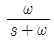
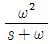
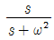
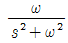
(정답률: 60%)
65. 그림과 같은 논리회로의 출력 Y는?
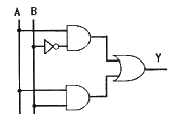
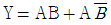
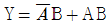
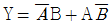
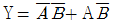
(정답률: 73%)
66. 제어계의 응답 속응성을 개선하기 위한 제어동작은?
- D 동작
- I 동작
- PD 동작
- PI 동작
(정답률: 61%)
67. s2+2δωns+ω2n=0인 계가 무제동 진동을 할 경우 δ의 값은?
- δ=0
- δ＜1
- δ=1
- δ＞1
(정답률: 63%)
68. 그림과 같은 RL직렬회로에 구형파 전압을 인가했을 때 전류 i를 나타내는 식은?
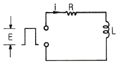
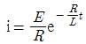
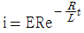
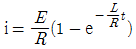
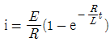
(정답률: 48%)
69. 배리스터의 주된 용도는?
- 온도 측정용
- 전압 증폭용
- 출력전류 조절용
- 서지전압에 대한 회로 보호용
(정답률: 76%)
70. 어떤 제어계의 단위계단 입력에 대한 출력응답 c(t)=1-e-t로 되었을 때 지연시간 Td(s)는?
- 0.693
- 0.346
- 0.278
- 1.386
(정답률: 35%)
71. 전자회로에서 온도 보상용으로 많이 사용되고 있는 소자는?
- 저항
- 코일
- 콘덴서
- 서미스터
(정답률: 81%)
72. 열처리 노의 온도제어는 어떤 제어에 속하는가?
- 자동조정
- 비율제어
- 프로그램제어
- 프로세스제어
(정답률: 51%)
73. 일정전압의 직류전원에 저항을 접속하고 전류를 흘릴 때, 이 전류값을 50% 증가시키기 위한 저항값은?
- 0.6R
- 0.67R
- 0.82R
- 1.2R
(정답률: 58%)
74. 피드백 제어계의 구성요소 중 동작신호에 해당되는 것은?
- 목표값과 제어량의 차
- 기준입력과 궨환신호의 차
- 제어량에 영향을 주는 외적 신호
- 제어요소가 제어대상에 주는 신호
(정답률: 53%)
75. 동기속도가 3600 rpm인 동기발전기의 극수는 얼마인가? (단, 주파수는 60Hz이다.)
- 2극
- 4극
- 6극
- 8극
(정답률: 57%)
76. 다음 블록선도 중 비례적분제어기를 나타낸 블록선도는?
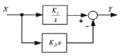
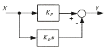
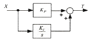
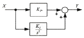
(정답률: 61%)
77. 전류 I=3t2+6t를 어떤 전선에 5초 동안 통과시켰을 때 전기량은 몇 C 인가?
- 140
- 160
- 180
- 200
(정답률: 41%)
78. 그림과 같은 신호흐름선도에서 C/R를 구하면?(오류 신고가 접수된 문제입니다. 반드시 정답과 해설을 확인하시기 바랍니다.)
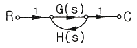
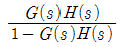
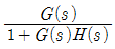
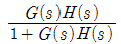
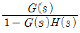
(정답률: 57%)
79. 다음 블록선도의 입력과 출력이 일치하기 위해서 A에 들어갈 전달함수는?
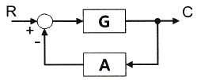
- 1+G / G
- G / G+1
- G-1 / G
- G / G-1
(정답률: 40%)
80. 어떤 제어계의 입력이 단위 임펄스이고 출력 c(t)=te-3t이었다. 이 계의 전달함수 G(s)는?
- 1 / (s+3)2
- t / (s+3)2
- s / (s+3)2
- 1 / (s+2)(s+1)
(정답률: 36%)